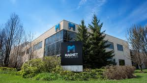

Position Overview
 During my co-op term as an IT DevOps and Cloud Programmer at Perimeter Institute, I engaged in various web and full-stack development projects that significantly contributed to the enhancement and optimization of systems. I worked closely with cross-functional teams, applying my technical skills and effective communication abilities to tackle complex challenges and drive impactful results.
During my co-op term as an IT DevOps and Cloud Programmer at Perimeter Institute, I engaged in various web and full-stack development projects that significantly contributed to the enhancement and optimization of systems. I worked closely with cross-functional teams, applying my technical skills and effective communication abilities to tackle complex challenges and drive impactful results.
Key Responsibilities
I utilized my knowledge in C#, Python, and software development to address bugs and develop new features within Magnet Forensics’ product suite. My work focused on improving existing tools and creating features that streamlined the integration of our software solutions for clients.
I collaborated with the team to integrate AI-driven solutions into our products, enhancing the overall functionality of Magnet Forensics’ tools. By working with AI experts, I helped develop features that improved data analysis and processing capabilities.
I designed and built custom solutions to address specific client needs, improving operational efficiency and addressing emerging challenges in the digital forensics industry. These solutions provided our clients with more powerful tools for data processing and analysis.
I worked closely with teams across various departments, including Product Management, Engineering, Marketing, and User Experience, to ensure successful feature delivery. This collaboration ensured that our tools aligned with the broader business and user goals.
I conducted regular demos and communicated project progress with internal teams and stakeholders, presenting technical details and receiving feedback to refine the features and solutions we were developing.
Skills and Qualifications
In my role at Magnet Forensics, I demonstrated strong technical proficiency by leveraging C#, Python, and AI technologies in various projects, contributing to the development and optimization of software solutions. I applied my knowledge of object-oriented programming and software development best practices to integrate new features and resolve bugs within our product suite. My experience with AWS and system integration, along with my understanding of cloud computing and AI applications, allowed me to work on cutting-edge solutions that enhanced the capabilities of our tools. I utilized version control systems like Git and GitHub to collaborate effectively with the team and ensure seamless code integration across projects. Throughout my time, I worked on AI-driven features, bug fixes, and developing custom solutions tailored to client needs, continuously enhancing our software's functionality. My collaboration with cross-functional teams, including engineering and product management, ensured that the features I developed were aligned with business objectives and customer requirements. I regularly communicated technical details and progress with stakeholders, helping to refine solutions and maintain alignment with project goals. I excelled in problem-solving, identifying areas for optimization, and implementing solutions that significantly improved system performance and user experience. As a Computer Science student, I drew on my academic background and technical skills to manage multiple tasks, delivering high-quality results on time. Since completing the work term, my technical and professional growth has accelerated, enabling me to contribute more effectively to complex projects and continue improving the quality of my work.
Conclusion

My co-op work term at Magnet Forensics was a transformative experience that significantly contributed to my professional growth and technical development. I gained hands-on experience working with C#, Python, and AI technologies, directly contributing to the development and optimization of Magnet’s product suite. I applied my knowledge of object-oriented programming, cloud technologies, and AI integration to deliver impactful solutions that improved system functionality and enhanced the user experience. This experience solidified my technical expertise and gave me valuable exposure to real-world software development challenges.
One of the most rewarding aspects of my time at Magnet was the opportunity to receive constructive feedback from team members and stakeholders. This feedback was instrumental in refining my coding practices, improving my problem-solving abilities, and optimizing features I developed. By working closely with experienced engineers, I was able to identify and implement improvements that increased the performance and reliability of our software solutions.
Improving my communication skills was another key focus of my term. I adapted my communication style to better engage with stakeholders, ensuring that technical concepts and project updates were clearly conveyed to both technical and non-technical audiences. This ability to bridge the gap between teams helped streamline project execution, resolve issues more effectively, and fostered stronger collaboration within the organization.
Working at Magnet Forensics was an enriching experience that emphasized innovation, collaboration, and continuous learning. I contributed to building AI-driven features and resolving complex bugs, all while gaining valuable insights into the broader goals of the company. My role allowed me to apply my technical knowledge in a dynamic, collaborative environment, which has better prepared me for future challenges in software development and AI integration.
In conclusion, my co-op term at Magnet Forensics helped me become a more skilled, adaptable, and communicative professional, equipped with the technical expertise and collaborative mindset necessary for tackling complex challenges in the software development field.
One of the most rewarding aspects of my time at Magnet was the opportunity to receive constructive feedback from team members and stakeholders. This feedback was instrumental in refining my coding practices, improving my problem-solving abilities, and optimizing features I developed. By working closely with experienced engineers, I was able to identify and implement improvements that increased the performance and reliability of our software solutions.
Improving my communication skills was another key focus of my term. I adapted my communication style to better engage with stakeholders, ensuring that technical concepts and project updates were clearly conveyed to both technical and non-technical audiences. This ability to bridge the gap between teams helped streamline project execution, resolve issues more effectively, and fostered stronger collaboration within the organization.
Working at Magnet Forensics was an enriching experience that emphasized innovation, collaboration, and continuous learning. I contributed to building AI-driven features and resolving complex bugs, all while gaining valuable insights into the broader goals of the company. My role allowed me to apply my technical knowledge in a dynamic, collaborative environment, which has better prepared me for future challenges in software development and AI integration.
In conclusion, my co-op term at Magnet Forensics helped me become a more skilled, adaptable, and communicative professional, equipped with the technical expertise and collaborative mindset necessary for tackling complex challenges in the software development field.
Acknowledgements
Supervisors
Jan Wichanski and Brain Team
I would like to acknowledge Jan, my supervisor, and the Brain Team, which included Justin, Devon, Paul, Vinit, and Fredrik. They helped me navigate a new work environment and its nuances. They allowed me to be creative and explore, while always being available for support.
Opportunities
Connections and Networking
I was always given the change to connect with faculty and staff and discuss my work. Additionally, I was encouraged to step outside of my comfort-zone to do so.
Training and Support
Learning and Feedback
Many individuals and groups of people supported my acquisition of knowledge and skills by providing me with training material and giving me constructive criticism to improve myself.